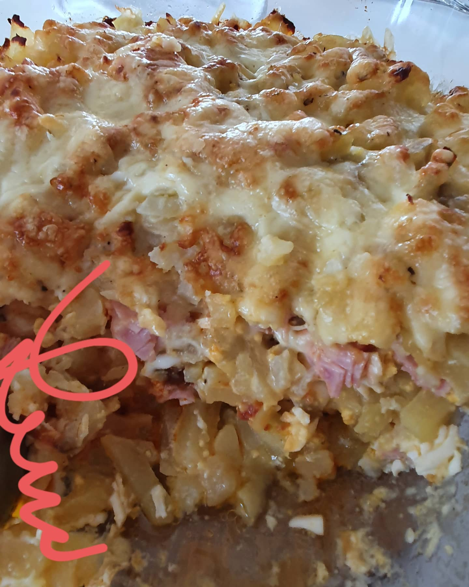

najlepsiepozbieranerecepty
22.04.2021
LENA VARÍ...
FRANCÚZSKE ZEMIAKY
keď potrebujem mať francúzske zemiaky rýchlo urobené, robím ich z varených zemiakov.
robím ich do jánskeho misy
15 ks väčších zemiakov - na 3 poschodia
4 vajcia - uvariť na tvrdo
2 vajcia - do smotany
400 g debrecínska šunka
1 klobáska
350 g eidamu
1 šľahačková smotana
2 ČL horčice
soľ
4druhy korení z mlynčeka
*******
- uvariť zemiaky v šupke v slanej vode, ošúpať
- uvariť 4 vajcia
- nastrúhať syr - väčšie kvapky strúhadla
- šunku nakrájať na kocky, klobásku na kolieska, 4 vajcia strúham na strúhadle ako syr priamo do misy
- v pohári zmiešať smotanu + 2 vajcia + korenie + soľ
******
- na spodok misy dať soľ korenie, 5 ks zemiakov pretlačiť cez mriežkový krájač na zemiaky, osoliť, okoreniť, rozvrstviť polovicu šunky a polovicu klobásky, nastrúhať 2 vajcia, posypať tretinou syra
- zopakovať - 5 ks zemiakov, soľ, korenie, šunka, klobása, vajcia
- zakryť 5 zemiakmi, osoliť okoreniť,
- poukladať cca 8 plátkov masla
- dať piecť na 220 stupňov na 30-35 min zakryté
- vybrať, posypať poslednou tretinou syra a dať zapiecť odkryté cca 15 min
#najlepsiepozbieranerecepty
#najlepsiepozbieranereceptyy
#zemiaky
#francuzskezemiaky
#brambory
#obed
#lunch